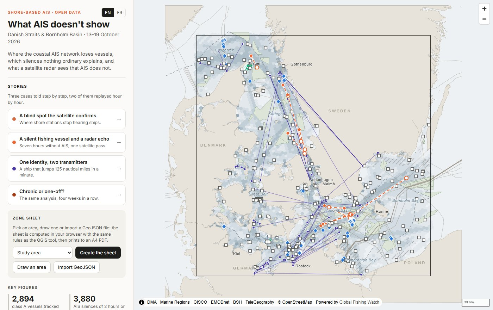
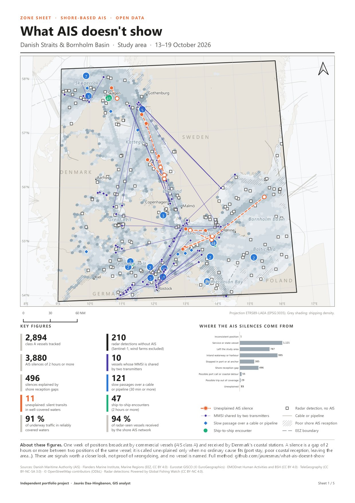
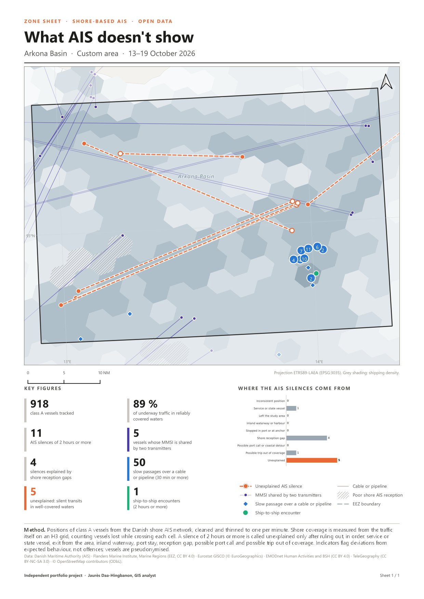
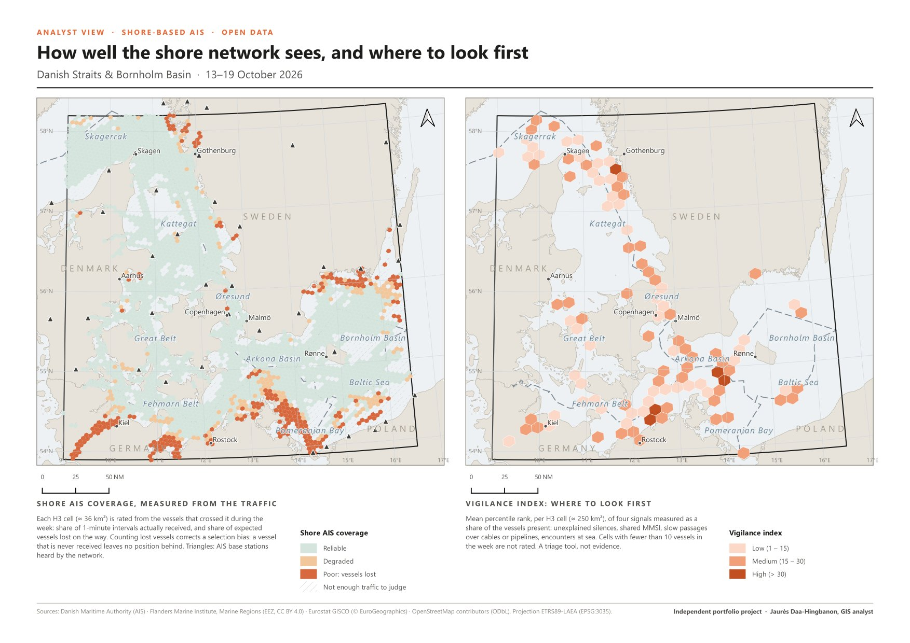
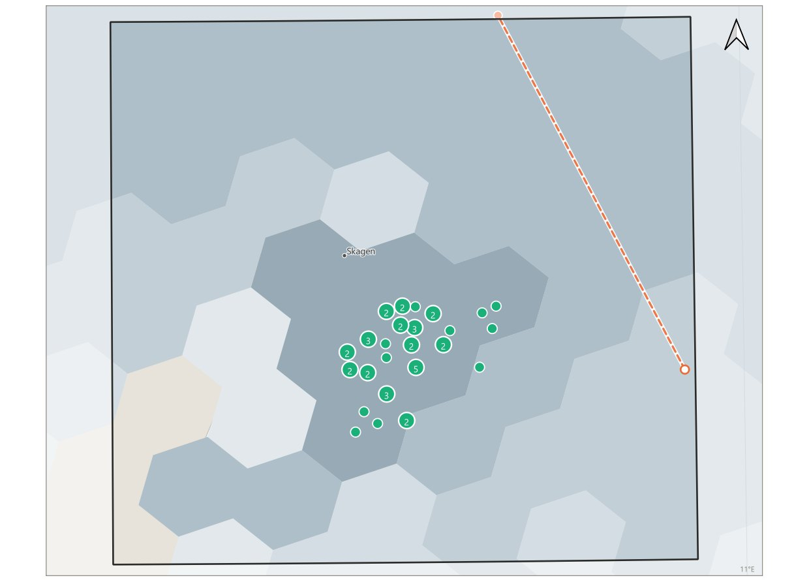
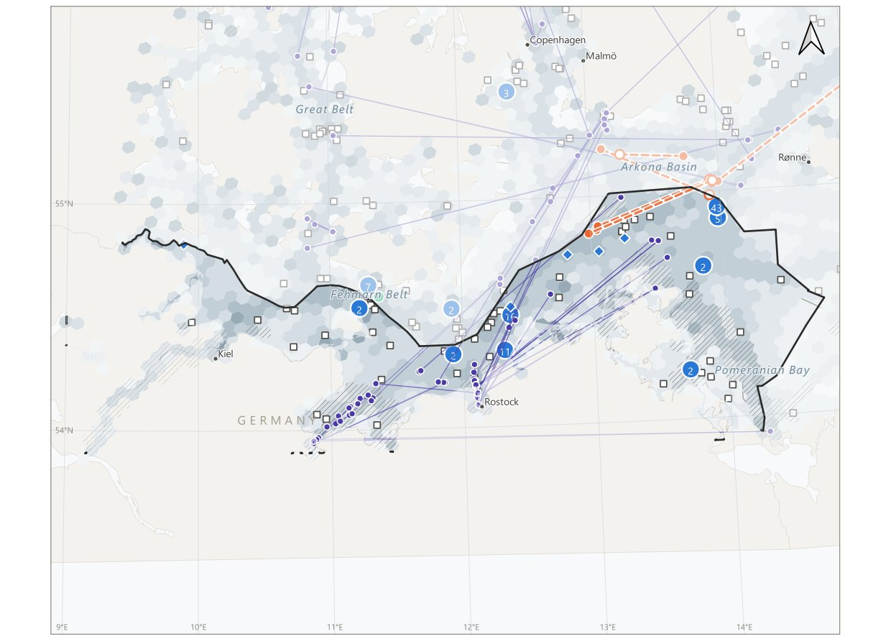

Analyse spatiale · Données maritimes · PostgreSQL/PostGIS · H3 · QGIS · Webmapping · Projet personnel, 2026
Ce que l'AIS ne montre pas
Mesurer où le réseau AIS côtier perd la trace des navires, et ce que le radar satellite voit à sa place, dans les détroits danois et le bassin de Bornholm
Contexte et objectif
Le système d'identification automatique (AIS) fait émettre à chaque navire sa position et son identité. Depuis la côte, des stations radio les reçoivent, mais pas partout ni tout le temps : au large, la réception dépend de la portée et de la météo. Un navire qui « disparaît » n'a donc pas forcément éteint son émetteur. Ce projet sépare les silences ordinaires de ceux qu'aucune cause banale n'explique, et mesure où le réseau est aveugle.
Il porte sur une semaine de trafic, du 13 au 19 octobre 2026, dans les détroits danois et le bassin de Bornholm. Les indicateurs signalent des écarts au comportement attendu, pas des infractions. Aucun navire n'est nommé et les sorties publiques sont agrégées ou pseudonymisées. C'est un projet personnel, indépendant, réalisé uniquement à partir de données ouvertes.

Une semaine en chiffres
- 117,6 millions de messages AIS traités et 2 894 navires de classe A suivis.
- 3 880 silences AIS de 2 heures ou plus : 496 sont expliqués par les limites du réseau côtier, et 11 restent sans explication (10 navires), des transits silencieux en eaux pourtant bien couvertes.
- 10 navires dont l'identifiant MMSI est partagé par un autre émetteur, avec au moins trois sauts de position impossibles.
- 121 passages lents au-dessus de câbles ou de pipelines (moins de 2 nœuds pendant 30 minutes ou plus), pour 42 navires.
- 47 rencontres navire à navire (moins de 500 m pendant 2 heures ou plus), dont 45 au large de Skagen.
- 2 373 détections radar Sentinel-1 sur 13 passages de satellite, dont 238 sans AIS.
Seules 9 % des positions en route tombent dans des cellules que le réseau ne couvre pas de façon fiable : l'essentiel du trafic est bien vu, et c'est ce qui donne du sens aux silences restants.


Démarche
- Données : sept fichiers journaliers de l'Autorité maritime danoise (4,3 Go), et des couches de référence : zones économiques exclusives, côtes, câbles, pipelines, parcs éoliens et mouillages.
- Nettoyage : 117,6 millions de lignes deviennent 9,3 millions de positions, en sept étapes journalisées. 28 % des lignes brutes sont des doublons exacts, et chaque enregistrement écarté est consigné avec son motif.
- PostGIS et H3 : la couverture est mesurée par cellule H3 à partir du trafic réellement reçu, y compris une mesure des « navires perdus » en route, qui en déclasse 288.
- Indicateurs : silences classés en neuf catégories, identités en conflit, passages lents sur câbles et pipelines, rencontres en mer. Un silence n'est dit « inexpliqué » que si le navire est resté en eaux bien couvertes, si le réseau recevait ses voisins et s'il n'a pas eu le temps de sortir de la couverture.
- Indice de vigilance : le rang percentile moyen de quatre signaux, par cellule H3 d'environ 250 km². C'est un outil de tri, pas une preuve.
Tous les seuils sont réunis dans un seul fichier de configuration, et l'ensemble tourne en une quarantaine de minutes sur un portable pour la semaine d'étude.

Un contrôle indépendant par le radar
Global Fishing Watch publie des détections radar Sentinel-1 rapprochées de l'AIS. Chaque détection est datée à la minute et confrontée au réseau danois. Si la carte de couverture est juste, la part de navires que le réseau a bien reçus doit baisser là où elle est jugée mauvaise, et c'est ce qui se produit :
| Couverture de la cellule | Navires vus au radar | Part reçue par le réseau danois |
|---|---|---|
| Fiable | 1 775 | 99,3 % |
| Dégradée | 91 | 81,3 % |
| Trafic insuffisant | 56 | 71,4 % |
| Mauvaise | 177 | 51,4 % |
Sur les 238 détections sans AIS, 28 sont dans des parcs éoliens (exclus des sorties), 26 sont près d'un navire silencieux dans l'AIS à cette minute, et 72 sont uniquement radar en eaux bien couvertes. Trois des 11 silences inexpliqués ont eu lieu pendant un passage du satellite.
Ponctuel ou chronique ? Quatre semaines
La même chaîne a tourné sans modification sur trois semaines précédentes.
| Semaine du | Navires | Silences AIS | Inexpliqués | Trafic en eaux bien couvertes |
|---|---|---|---|---|
| 22 septembre | 3 156 | 4 974 | 4 | 89,6 % |
| 29 septembre | 3 136 | 4 927 | 7 | 88,9 % |
| 6 octobre | 2 837 | 3 836 | 11 | 91,9 % |
| 13 octobre (étude) | 2 894 | 3 880 | 11 | 91,3 % |
Les zones d'ombre sont structurelles : 168 cellules H3 (5 120 km²) sont mal couvertes au moins trois semaines sur quatre, dont 109 en eaux allemandes, 37 en suédoises et 22 en polonaises, et aucune en eaux danoises. Les silences inexpliqués, eux, ne se répètent pas : 33 en quatre semaines, pour 30 navires différents.


Une carte web et un outil QGIS
La carte web, en anglais et en français, est une page statique (MapLibre GL JS qui lit des fichiers GeoJSON). Elle propose quatre histoires guidées : un angle mort que le satellite confirme, un navire de pêche silencieux et un écho radar, une identité partagée par deux émetteurs (deux de ces cas sont rejoués heure par heure, avec une barre de temps), et la comparaison sur quatre semaines. Elle peut aussi produire une fiche de zone sans QGIS, pour une zone dessinée à la main, avec Turf.js et h3-js : PDF imprimable, CSV, GeoJSON et lien qui rouvre la zone.
Le projet QGIS regroupe les couches par thème, six thèmes de carte, sept repères spatiaux et deux mises en page (la fiche de zone et la vue analyste). L'outil « Produire une fiche de zone » s'ajoute à la boîte à outils de traitements et se lance aussi en lot. Contrôlé sur les cinq zones de l'atlas, il donne des comptes de signaux identiques à la chaîne complète ; le nombre de navires est inférieur de 1 à 2,5 %, et la part de couverture peut différer de 8 points au plus dans les zones côtières à grands ports.
Pour l'installer, dans QGIS : Extensions, Installer depuis un ZIP, puis choisir le fichier téléchargé.
Télécharger l'outil QGIS (8 Ko) Les cinq fiches de zone (PDF, 6 Mo)Contrôle qualité
Les règles de classement sont testées sans base de données. Les données publiées sont vérifiées (cohérence des fichiers, aucun MMSI ni identifiant), la carte web est testée dans un navigateur sans interface, et l'outil QGIS est empaqueté puis essayé de bout en bout. Ces contrôles se lancent à chaque envoi de code, avec GitHub Actions.
Limites
Au-delà des eaux danoises, la couverture repose sur une réception à longue portée qui varie avec la météo. Les tracés de câbles et de pipelines sont indicatifs. Un silence inexpliqué peut venir d'un émetteur ou d'une antenne défaillante : les indicateurs montrent où regarder, pas ce qui s'est passé. Quatre semaines d'automne ne permettent pas de séparer les effets saisonniers. La suite logique est une saison entière de données et les détections radar pour les semaines de comparaison.
Consulter le projet
La carte web et le dépôt complet (scripts Python et SQL, projet QGIS, outil, méthode et sources) sont en accès libre. Les données sont ouvertes, sous la licence de chaque producteur, dont deux licences non commerciales (TeleGeography et Global Fishing Watch).
Ouvrir la carte web Voir le code sur GitHub